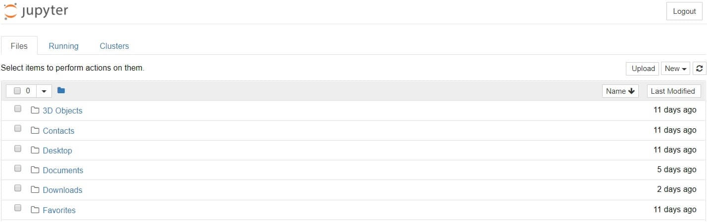
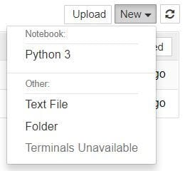

Jupyter Notebook – невероятно мощный инструмент для интерактивной разработки и представления проектов в области наук о данных. В этой статье вы узнаете, как настроить Jupyter Notebooks на локальном компьютере и как начать использовать его в ваших проектах.
Начнем с определения: что такое «notebook» (блокнот)? Блокнот объединяет код и его вывод в единый документ, который объединяет визуализацию, повествовательный текст, математические уравнения и другие мультимедиа. Этот интуитивно понятный рабочий процесс способствует итеративной и быстрой разработке, что делает ноутбуки все более популярным выбором для представления в данных и их анализа.
Лучше всего то, что в рамках проекта с открытым исходным кодом Project Jupyter он полностью бесплатен.
Проект Jupyter является преемником более раннего проекта IPython Notebook, который впервые был опубликован в качестве прототипа в 2010 году. Хотя в Jupyter Notebooks можно использовать с многими разными языками программирования, в этой статье основное внимание будет уделено Python, поскольку он является наиболее распространенный вариантом использования.
Кстати, подобных сред исполнения в мире существует несколько. Например, из бесплатных сред с открытым исходным кодом, в последне время стало популярно использовать VS Code от компании Microsoft с установленным плагином Jupyter (Jupyter notebook support).
Чтобы получить максимальную отдачу от этого урока, вы должны быть знакомы с программированием, особенно с Python и pandas. Тем не менее, если у вас есть опыт работы с другим языком, Python в этой статье не будет слишком сложным, а статья все равно будет вам полезной в настройке Jupyter Notebooks локально. Как вы увидите позже в этой статье, Jupyter Notebooks также может выступать в качестве гибкой платформы для работы с pandas и даже с Python.
В этой серии статей мы:
Итак, давайте продолжим и установим Jupyter.
Для новичка проще всего начать работу с Jupyter Notebooks, установив дистрибутив Anaconda. Anaconda является наиболее широко используемым дистрибутивом Python для работы с данными и поставляется с предустановленными наиболее популярными библиотеками и инструментами. Некоторые из крупнейших библиотек Python, включенных в Anaconda, включают NumPy, pandas и Matplotlib, хотя вы можете взглянуть на полный список с более чем 1000+ пакетов. Это позволит вам приступить к работе, без хлопот управления бесчисленными установками или беспокойства о зависимостях и проблемах установки, связанных с ОС.
Чтобы установить Анаконду, просто:
Если вы более продвинутый пользователь с уже установленным Python и предпочитаете управлять своими пакетами вручную, вы можете просто использовать pip для установки Jupyter Notebooks:
pip3 install jupyter
В этом разделе мы научимся запускать и сохранять блокноты, познакомиться с их структурой и рассмотрим их интерфейс. Мы познакомимся с некоторыми основными терминами, которые приведут вас к практическому пониманию того, как самостоятельно использовать Jupyter Notebooks, и подготовимся к следующему разделу, в котором описан пример анализа данных и опробуем на практике все, что мы изучаем здесь.
В Windows вы можете запустить Jupyter с помощью ярлыка, который Anaconda добавляет в ваше меню «Пуск», которое откроет новую вкладку в веб-браузере по умолчанию, и которая должна выглядеть примерно так, как показано на следующем скриншоте

Это пока не блокнот, но не паникуйте! Это панель инструментов ноутбука, специально разработанная для управления ноутбуками Jupyter. Думайте об этом как о панели запуска.
Имейте в виду, что панель управления предоставит вам доступ только к файлам и подпапкам, содержащимся в каталоге запуска Jupyter; однако каталог запуска может быть изменен. Также можно запустить панель мониторинга в любой системе через командную строку (или терминал в системах Unix), введя команду jupyter notebook; в этом случае текущим рабочим каталогом будет каталог запуска.
Проницательный читатель, возможно, заметил, что URL-адрес панели мониторинга похож на http://localhost:8888/tree. Localhost не является веб-сайтом, но указывает, что контент обслуживается с вашего локального компьютера: с вашего собственного компьютера. Ноутбуки и панель инструментов Jupyter – это веб-приложения, и Jupyter запускает локальный веб сервер Python для обслуживания этих приложений в веб-браузере, что делает его практически независимым от платформы и открывает возможности для более удобного обмена в Интернете.
Интерфейс панели управления в основном не требует пояснений – хотя мы вернемся к нему позже. Так чего же мы ждем? Перейдите в папку, в которой вы хотите создать свой первый блокнот, нажмите кнопку «Создать» в правом верхнем углу и выберите «Python 3» (или выбранную вами версию).

Ваш первый блокнот Jupyter откроется в новой вкладке – каждый блокнот использует свою вкладку, поэтому вы можете открывать несколько блокнотов одновременно. Если вы переключитесь обратно на панель инструментов, вы увидите новый файл Untitled.ipynb и зеленый текст, который говорит о том, что ваш ноутбук работает.
Будет полезно понять, что это за файл на самом деле. Каждый файл .ipynb представляет собой текстовый файл, который описывает содержимое вашей записной книжки в формате JSON. Каждая ячейка и ее содержимое, включая вложения изображений, которые были преобразованы в строки текста, перечислены в нем вместе с некоторыми метаданными. Вы можете редактировать их самостоятельно – если знаете, что делаете! – выбрав «Edit> Edit Notebook Metadata» в строке меню в записной книжке.
Вы также можете просмотреть содержимое файлов вашей записной книжки, выбрав «Edit» на панели управления, но ключевое слово здесь – «можете»; нет никакой другой причины, кроме любопытства, делать это, если вы действительно не знаете, что делаете.